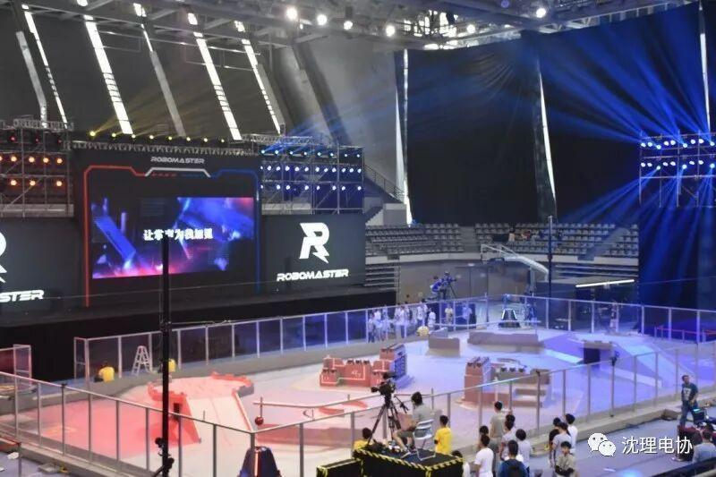
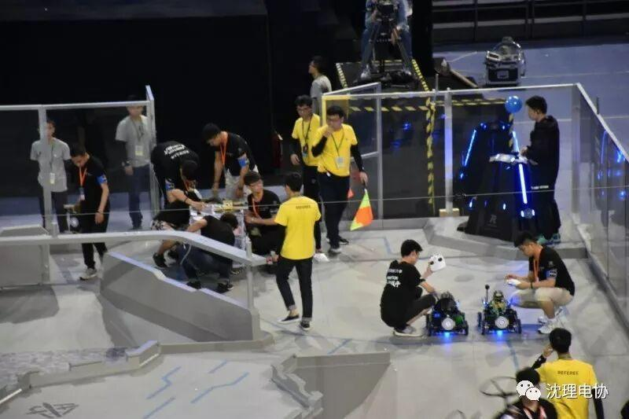
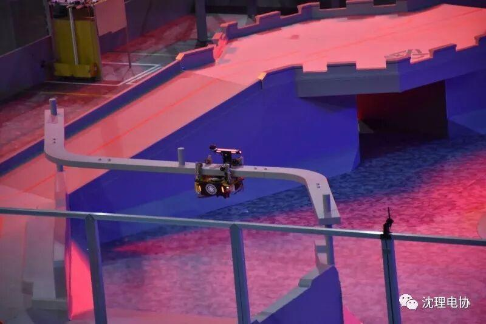
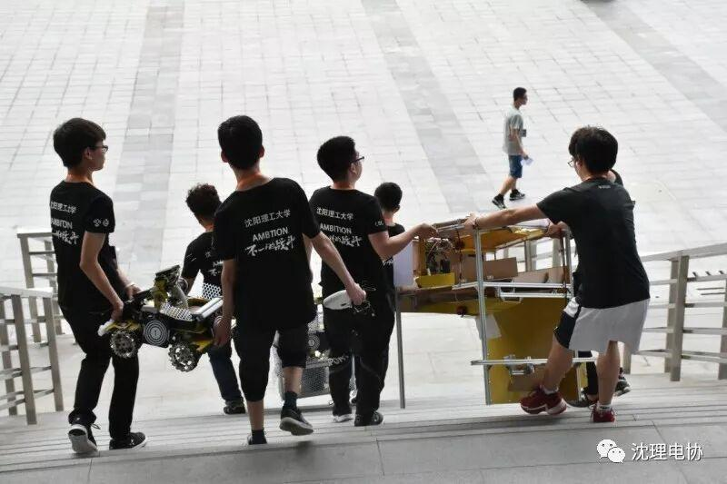
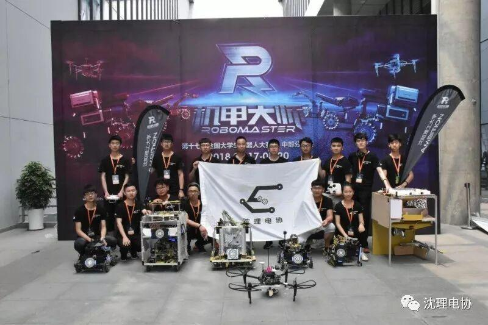
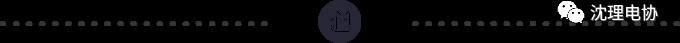

Ambition道阻且艰，亦不阻我志矣
Ambition的王者之路

自古成败论英雄，胜者有胜者的骄傲，败者有败者的意志。伴随着号角声渐歇，RM中部分区赛落下了帷幕。接下来，小编带你回味这几天惊心动魄的比赛，假装我们在现场!

比赛拉开了帷幕，我们Ambition战队对战江科战队，怎么说呢，我们与他们实力相当，算是五五开吧。

比赛么，自然是互不相让，与他们第一场比赛中，双方队员全神贯注，气氛紧张，不料敌方取得先机，我方也不甘示弱，步步紧逼进而反超，眼看胜利马上到来，却因为着急取胜，造成了战略失误。很是遗憾啊，最终我们仅以800多血量惜败江科。

第二场江科机器人中途出现故障，我们取得了胜利。但由于先前与安信工的比赛中，我们开始战略没调整好；虽拿到一血，共“杀死”对面两个机器人，但对方死守基地，我方惜败，我们Ambition终是抱憾离场。


很遗憾我们是所谓的失败者，成功的感觉固然令人欢喜，但是作为一支强大的战队，总要感受一下其他的感觉，相信在这场比赛之后，我们战队将会更加的成熟稳健，成为真正意义上的王者。

就像有首歌唱的，放手一搏吧，别顾虑太多!我坚信我们战队在各个组织的支持下将走的越来越远，队员们的努力终将不会白费，欲戴王冠，必承其重。加油吧，队员们!下一年的比赛中我们必将会脱颖而出。
最后，还是要拜托各位同学帮忙投下票啦
您的宝贵一票，会是战队晋级的关键呢！
扫描上方二维码点击“中部”赛区为
“沈阳理工大学”投上宝贵的一票，
（每天可投一票哟！！！）

文| 张涛
编辑| 刘聪